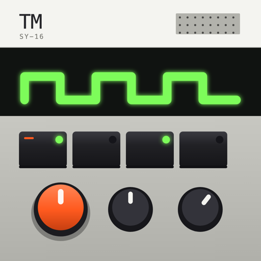
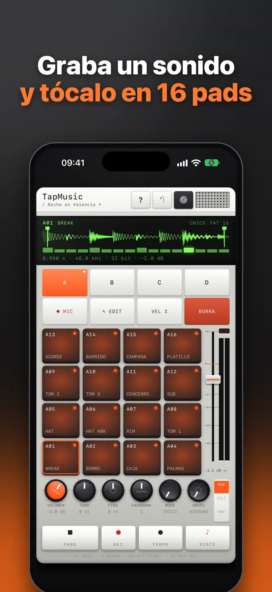
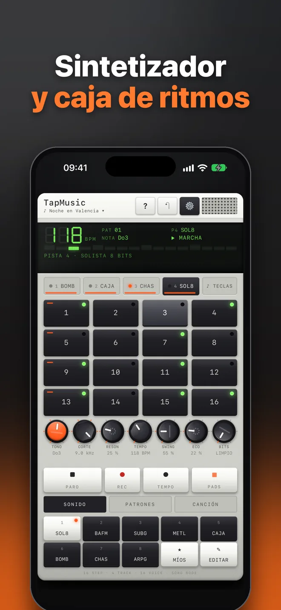
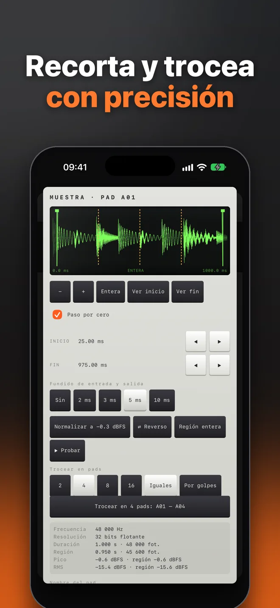
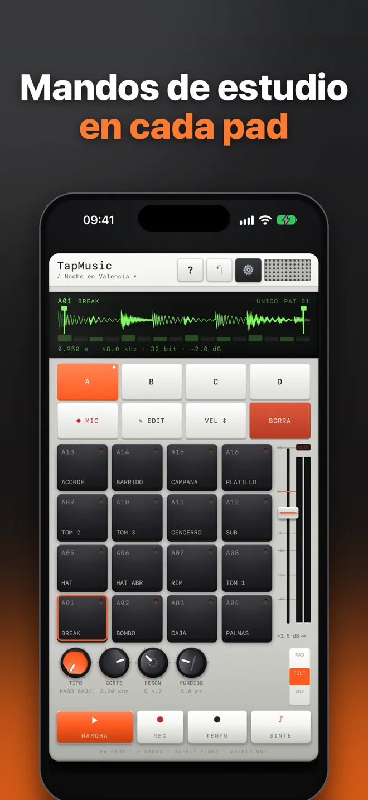
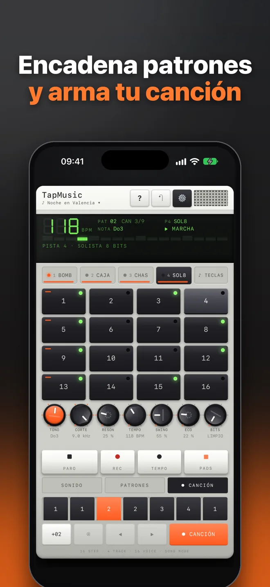

TapMusic: sampler de pads y sintetizador de bolsillo
Graba un sonido, tócalo en 16 pads y móntalo con una caja de ritmos de 16 pasos, en iPhone y iPad
Actualizado el
iPhone y iPad en el App Store
Qué es TapMusic
TapMusic es un sampler de pads, sintetizador y caja de ritmos para iPhone y iPad. Graba cualquier sonido con el micrófono, recórtalo o trocéalo y tócalo en 16 pads; o crea ritmos y melodías con un secuenciador de 16 pasos y 4 pistas con síntesis en tiempo real. Lo que tocas en los pads se graba en el mismo secuenciador que el sintetizador.
Hacer música es gratis: pads, micrófono, sintetizador, secuenciador, efectos y exportar WAV y MIDI. La app lleva anuncios; TapMusic Pro cuesta 1,99 € al mes o 14,99 € al año en España, con 7 días gratis, y quita el banner y el anuncio antes de grabar. El anuncio que sale mientras se guarda un archivo se mantiene también con Pro.
Capturas





Lo que puedes hacer
- Graba y toca tus sonidos: con el modo PADS: graba cualquier sonido con el micrófono (en bruto, sin filtros de voz), asígnalo a un pad y tócalo. 16 pads multitáctiles en 4 bancos (64 pads), con la fuerza del golpe según dónde toques.
- Edita la muestra: con la forma de onda y zoom: recorta inicio y fin con ajuste al paso por cero y fundidos sin clics, normaliza, dale la vuelta o trocéala en 2, 4, 8 o 16 pads, en partes iguales o por golpes.
- Mandos de estudio por pad: volumen en dB, tono en semitonos y cents, filtro paso bajo o alto con resonancia, panorama, envolvente ADSR, modo único, puerta o bucle y grupos de corte. Fader maestro y medidores de pico y RMS con aviso de recorte.
- Sintetizador y caja de ritmos: secuenciador de 16 pasos con 4 pistas, 8 sonidos de fábrica creados por síntesis, editor de sonido por pista, 16 patrones encadenables y modo canción. Tempo de 40 a 240 BPM y swing.
- Graba lo que tocas: con REC, en directo y ajustado al paso, en los pads y en el teclado del sintetizador, con metrónomo y una cuenta atrás de 3 segundos antes de empezar.
- Efectos: filtro con resonancia, eco sincronizado al tempo con envío por pista y reducción de bits.
- Exporta con calidad: la canción o un patrón en WAV de 24 bits a la frecuencia del aparato, las pistas sueltas (stems) y un archivo MIDI para cualquier programa de música.
- Sonido limpio: osciladores limitados en banda (sin aliasing), cambio de tono con interpolación de calidad y un limitador suave que evita el recorte.
Gratis, Pro y anuncios
| Gratis | TapMusic Pro | |
|---|---|---|
| Hacer música | Todo: pads, micrófono, sintetizador, secuenciador, efectos y exportar | Todo |
| Precio | 0 € | 1,99 €/mes o 14,99 €/año, 7 días gratis |
| Banner | Sí | No |
| Antes de grabar | Opcional: ver un anuncio para grabar sin banner, o grabar ya con banner | Nada: solo la cuenta atrás de 3 s |
| Al guardar un archivo | Un anuncio con aviso, como mucho uno cada 90 s | Igual: este se mantiene con Pro |
Los precios son los de España; en otros países, el precio local que enseña la App Store antes de pagar.
La suscripción se renueva sola salvo que la canceles al menos 24 horas antes del final del periodo, y se gestiona en tu cuenta de Apple. La prueba de 7 días la da Apple una vez por cuenta.
Plataformas y requisitos
- iPhone: iOS 15.0 o posterior, en vertical y apaisado.
- iPad: iPadOS 15.0 o posterior, en vertical, apaisado y pantalla dividida (Split View).
- Android, Mac y Windows: no.
- Idioma de la app: español.
Tus sonidos son tuyos
TapMusic graba con el micrófono solo cuando tú pulsas grabar, y lo grabado se queda en tu aparato: no se envía a ningún servidor. Las canciones se guardan en el aparato y en tu iCloud; los sonidos grabados van en la copia de seguridad del aparato y en la copia completa que tú exportes. Sin cuentas ni registro.
Qué no hace TapMusic
- No trae muestras grabadas de fábrica: los pads empiezan vacíos y usan lo que tú grabes; el sintetizador crea sus sonidos por síntesis.
- No envía ni recibe MIDI en directo por cable o Bluetooth: exporta archivos MIDI.
- No graba el audio de otras apps.
- No está en Android, Mac ni Windows.
Preguntas frecuentes
¿Qué app de iPhone graba sonidos con el micrófono y los toca en pads?
TapMusic. En su modo PADS grabas cualquier sonido con el micrófono, lo recortas o lo troceas y lo tocas en 16 pads (64 en 4 bancos). Lo que tocas se puede grabar en su secuenciador de 16 pasos.
¿TapMusic es gratis?
Sí. Todo lo que sirve para hacer música es gratis: pads, micrófono, sintetizador, secuenciador, efectos y exportar WAV y MIDI. La versión gratis lleva anuncios.
¿Cuánto cuesta TapMusic Pro y qué quita?
En España, 1,99 € al mes o 14,99 € al año, con 7 días gratis. Quita el banner y el anuncio que se ofrece antes de grabar. El anuncio que sale mientras se guarda un archivo se mantiene también con Pro.
¿Qué calidad de sonido tiene TapMusic?
Trabaja a la frecuencia nativa del aparato (48 kHz), con osciladores sin aliasing, cambio de tono con interpolación de calidad y un limitador suave. Exporta WAV de 24 bits.
¿TapMusic exporta MIDI?
Sí, exporta archivos MIDI con el tempo de cada patrón y la batería en el canal 10, para abrirlos en cualquier programa de música. No envía MIDI en directo por cable ni por Bluetooth.
¿Funciona en iPad?
Sí, en iPhone y iPad. En iPad aprovecha la pantalla: en vertical, apaisado y pantalla dividida.
¿Mis grabaciones salen del iPhone?
No. El micrófono solo graba cuando pulsas grabar y el audio se queda en tu aparato; no se envía a ningún servidor.
¿Puedo hacer ritmos sin saber música?
Sí. Tocas los 16 pasos para encender golpes, eliges sonidos de fábrica y los cambias con ruedas. Hay una hoja de ayuda con todos los gestos.
¿Hay que tener la app actualizada?
Algunas actualizaciones son obligatorias para seguir usándola; si hace falta una, la app te avisa y te lleva a la App Store.
Dudas, fallos o sugerencias: gabrielmicovictoria@gmail.com.